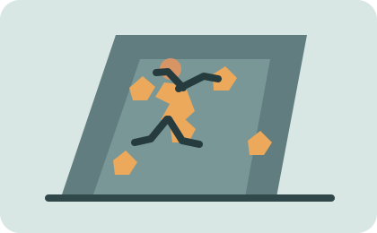
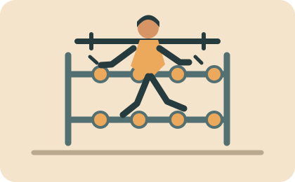
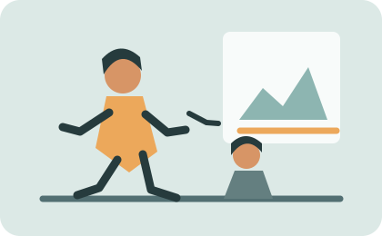
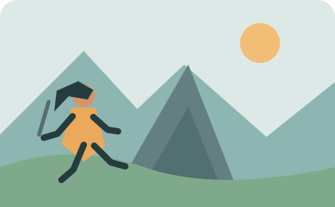

Rocódromo
Descubre una experiencia de movimiento, desafío y adrenalina en nuestro rocódromo. Hay rutas para distintos niveles, diseñadas para entrenar la técnica, compartir y disfrutar de la escalada en un entorno seguro.

Descubre una experiencia de movimiento, desafío y adrenalina en nuestro rocódromo. Hay rutas para distintos niveles, diseñadas para entrenar la técnica, compartir y disfrutar de la escalada en un entorno seguro.


El espacio cuenta con maquinaria para complementar los entrenamientos y trabajar fuerza, resistencia y movilidad. Estos equipos pueden ayudar a mejorar la condición física y complementar la práctica de la escalada.
Los cursos de escalada acompañan distintas etapas de aprendizaje, desde la iniciación hasta el perfeccionamiento de la técnica. Se realizan con un enfoque práctico y atención a la seguridad.


Las salidas guiadas permiten practicar escalada en la naturaleza con atención a la seguridad, la técnica y el entorno. Consulta disponibilidad y requisitos antes de apuntarte.